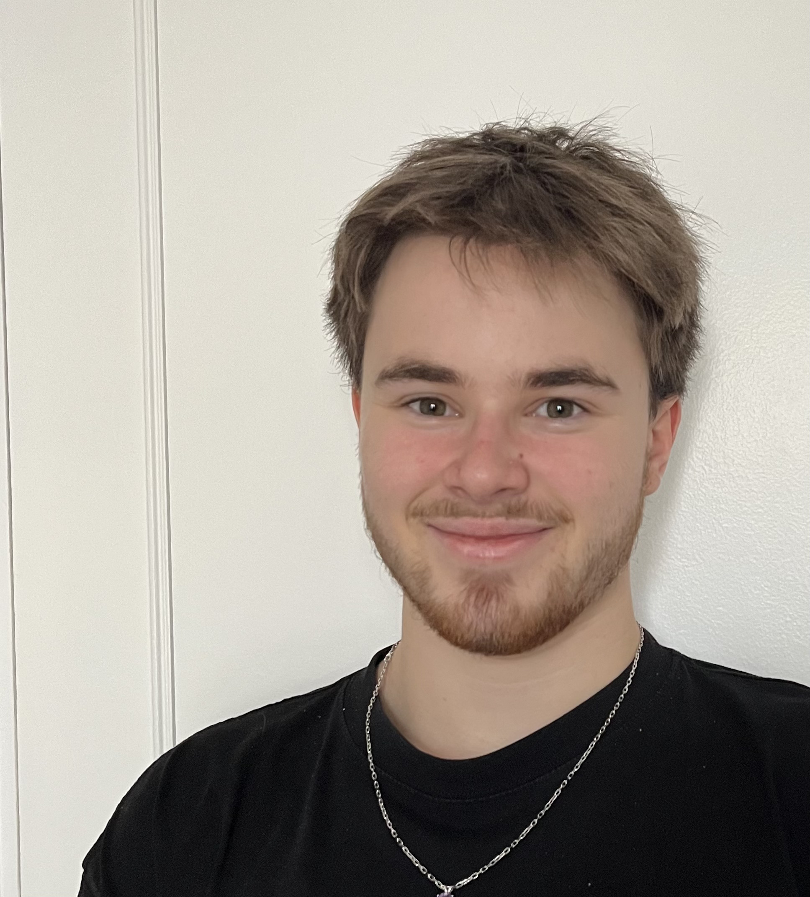
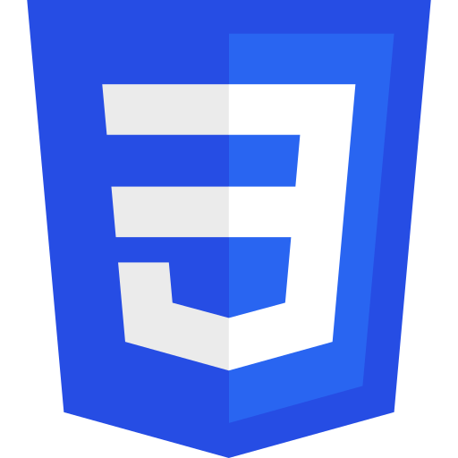
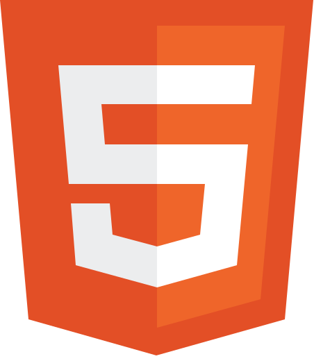
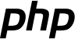
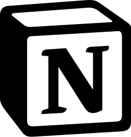
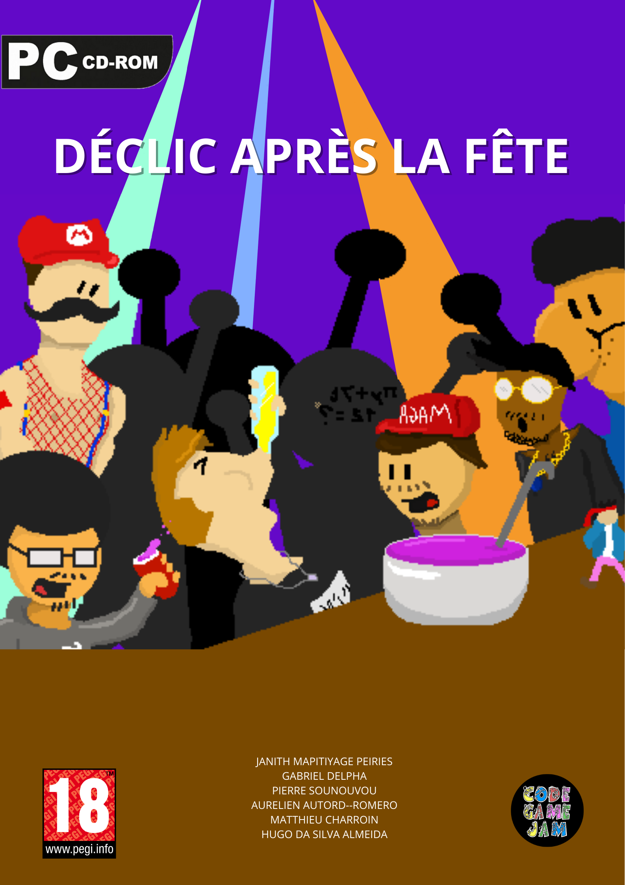
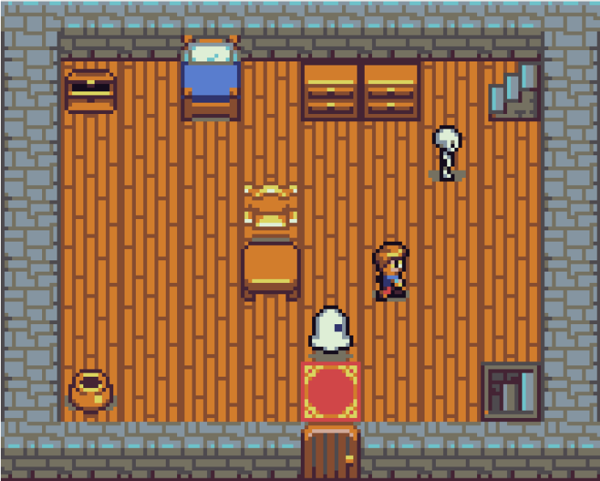
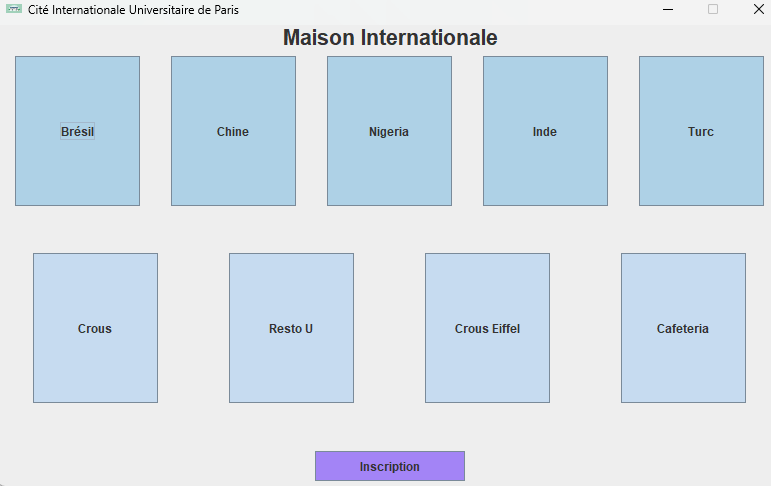

Système de Gestion Universitaire
Plateforme web et application Java centralisant l'administration et les sondages d'une promotion.
- Modélisation et requêtage de base de données relationnelle.
- Génération automatique de groupes et gestion des rôles.









Plateforme web et application Java centralisant l'administration et les sondages d'une promotion.

Jeu 2D vue de dessus conçu en 30h chrono sur le thème « La fête des clics ».

Développement bas niveau d'un jeu vue de dessus sans moteur clé en main.

Application de gestion pour la Cité Internationale Universitaire de Paris.
Infrastructure auto-hébergée autonome et sécurisée pour le streaming et le stockage.